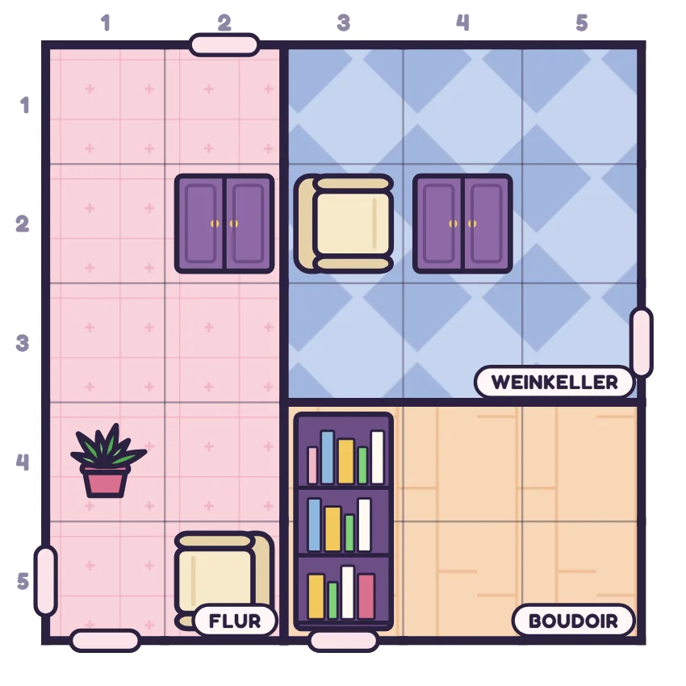

Das Boudoir duftet nach Parfüm und Geheimnissen.

Hinweise
A · Achim (♂ Mann): Befand sich direkt neben einem Stuhl.
B · Barbara (♀ Frau): War allein im Boudoir.
C · Carsten (♂ Mann): Befand sich direkt neben einer Pflanze.
D · Dorothea (♀ Frau): Befand sich in der 4. Reihe.
V · Vincent (♂ Mann): das Opfer. Der Täter ist die einzige verdächtige Person im selben Raum.
So wird gespielt
eine Person pro Reihe und pro Spalte · "neben" = direkt darüber/darunter/links/rechts, im selben Raum · auf blockierten Objekten (⊘) kann niemand stehen · das Opfer hat keinen Hinweis · Merkmale (♂ Mann, ♀ Frau, Brille, Hut) stehen hinter jedem Namen; bei Zählungen mit "insgesamt" zählen die Person selbst und das Opfer mit.
Lösung
Die Lösung erscheint am 30. November 2026, zusammen mit einem neuen Rätsel.
Lust auf mehr?
Die kostenlose App Cluedoku hat mehr als 600 Fälle, vom leichten 4×4 bis zum kniffligen 10×10, mit Tipps, die mitdenken, statt die Antwort zu verraten. Offline, ohne Konto.